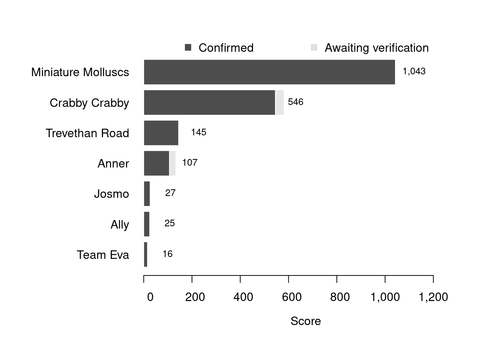

Content
You can view all the wildlife recorded at this event on iNaturalist.


| Records | 85 |
| Species | 55 |
| Verified species | 52 |
| Observers | 7 |
| Potential score | 1,841 |
| Confirmed score | 1,774 |
| Top verified species | Musculus costulatus |
| Top species rarity score | 200 |
| Registered participants | 15 |
| Children attending | 5 |
Congratulations to Miniature Molluscs for taking the gold medal in this BioBlitz Battle! And well done to everyone for a great game and some fantastic wildlife finds.
| Team | Records | Potential Score | Confirmed Score |
|---|---|---|---|
| Miniature Molluscs | 7 | 1043 | 1043 |
| Crabby Crabby | 40 | 582 | 546 |
| Trevethan Road | 18 | 145 | 145 |
| Anner | 16 | 133 | 107 |
| Josmo | 1 | 27 | 27 |
| Ally | 1 | 25 | 25 |
| Team Eva | 2 | 16 | 16 |

| Participant | Records | Potential Score | Confirmed Score |
|---|---|---|---|
| vickybarlow | 7 | 1043 | 1043 |
| KW | 40 | 582 | 546 |
| singingsquid | 18 | 145 | 145 |
| annerlanner | 16 | 133 | 107 |
| Daisy Drury | 1 | 27 | 27 |
| allyd66 | 1 | 25 | 25 |
| eva_hawkins | 2 | 16 | 16 |
A total of 8 species have a verified rarity score of 55 or higher.


Community verified records only
Click any image to view the taxon on iNaturalist.
| Name | Rarity Score | |
|---|---|---|

|
Ribbed Crenella - Musculus costulatus | 200 |

|
Pholoe inornata | 200 |

|
Comb-toothed Nereid - Platynereis dumerilii | 200 |

|
Runcina ferruginea | 200 |

|
Rissoa lilacina | 100 |

|
Cerith Needle Whelk - Cerithiopsis tubercularis | 88 |

|
Northern Lucina - Lucinoma borealis | 58 |

|
Cingula trifasciata | 55 |

|
Banded Venus - Polititapes rhomboides | 45 |

|
Maerl - Lithothamnion corallioides | 34 |

|
Forked ribbons - Dictyota dichotoma | 31 |

|
Sea Lettuce - Ulva rigida | 30 |

|
rusty rock - Hildenbrandia rubra | 28 |

|
Anomia ephippium | 27 |

|
Witch’s hair - Desmarestia aculeata | 27 |

|
Red Rags - Dilsea carnosa | 27 |

|
Common Dragonet - Callionymus lyra | 25 |

|
Colonial Seasquirt - Morchellium argus | 24 |

|
Rayed Artemis - Dosinia exoleta | 23 |

|
Pink Plate Weeds - Lithophyllum incrustans | 18 |

|
Perforated Barnacle - Perforatus perforatus | 18 |

|
Daisy Anemone - Cereus pedunculatus | 16 |

|
Montagu’s Stellate Barnacle - Chthamalus montagui | 15 |

|
Honeycomb Worm - Sabellaria alveolata | 14 |

|
Blue-rayed Limpet - Patella pellucida | 13 |

|
Netted Dogwhelk - Tritia reticulata | 13 |

|
Dahlia Anemone - Urticina felina | 13 |

|
European Painted Top Shell - Calliostoma zizyphinum | 12 |

|
Oarweed - Laminaria digitata | 12 |

|
Flat Periwinkle - Littorina obtusata | 12 |

|
Membraniporoidea | 12 |

|
Grey Topshell - Steromphala cineraria | 11 |

|
Strawberry Anemone - Actinia fragacea | 10 |

|
Irish Moss - Chondrus crispus | 10 |

|
Japanese Wireweed - Sargassum muticum | 10 |

|
Broadleaf Sea Lettuce - Ulva lactuca | 10 |

|
Common Coralline - Corallina officinalis | 9 |

|
Velvet Swimming Crab - Necora puber | 9 |

|
Common Hermit Crab - Pagurus bernhardus | 9 |

|
Serpulid Tubeworms - Serpulidae | 9 |

|
Purple Topshell - Steromphala umbilicalis | 9 |

|
Montagu’s Crab - Xantho hydrophilus | 9 |

|
Atlantic Beadlet Anemone - Actinia equina | 8 |

|
snakelocks anemone - Anemonia viridis | 8 |

|
Edible Crab - Cancer pagurus | 8 |

|
Saw Wrack - Fucus serratus | 8 |

|
bladder wrack - Fucus vesiculosus | 8 |

|
European Shag - Gulosus aristotelis | 8 |

|
Common Periwinkle - Littorina littorea | 8 |

|
Atlantic Dogwhelk - Nucella lapillus | 8 |

|
Common European Limpet - Patella vulgata | 8 |

|
European Green Crab - Carcinus maenas | 7 |